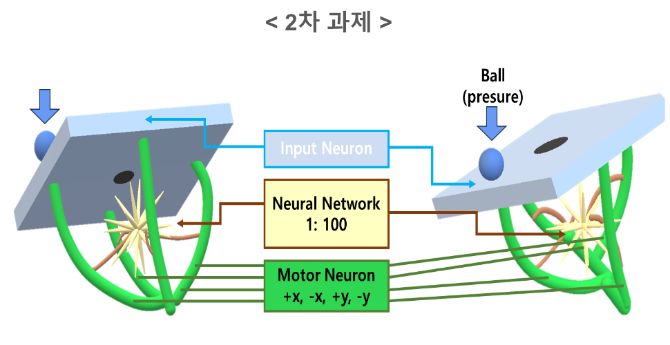

SNN 기반 BallControl 제어 회로
이 글에서는 SNN의 기본 원리를 조사한 뒤 BallControl 제어 회로에 적용한 과정을 설명합니다. 과제의 목표는 30×30cm 보드 위의 1~30g 공을 중앙 반경 1cm 영역으로 이동시키는 것이었습니다. 공의 위치와 무게를 spike 입력으로 표현하는 방법부터 LIF 뉴런의 상태 갱신, 네 방향 출력, 시뮬레이션과 합성 결과까지 순서대로 정리했습니다.
프로젝트 개요
최종 실험망은 99개 위치 입력, 32개 은닉 뉴런, 4개 방향 출력 뉴런으로 구성했다. 현재 위치는 11×9 격자 가운데 하나를 활성화하는 one-hot 벡터로, 무게는 일정한 시간 창에서 발생하는 spike 수로 표현했다. 네 출력 뉴런의 발화 횟수는 X축과 Y축의 양·음 방향 제어량에 대응시켰다. 수치로 주어진 공의 상태를 방향별 이벤트로 바꾸는 디지털 제어 구조이다.
- 문제
- 보드 위 공을 중앙 목표 영역으로 이동
- 구조
- 99 input → 32 hidden → 4 output
- 언어·도구
- Verilog · Vivado 2025.1 · 기능 시뮬레이션
- 담당 범위
- 팀장 · 과제 해석 · SNN/LIF 조사 · RTL 통합 · 실험·발표 자료
경진대회에서 구현한 것
설계를 시작할 때 먼저 회로가 받을 입력과 내보낼 출력을 정했다. 입력은 디지털 값으로 표현한 공의 위치와 무게이고, 출력은 네 방향의 1-bit spike이다. 그 사이에는 위치 오차를 방향별로 나누고, 시간에 따라 막전위를 갱신해 방향별 발화량을 계산하는 SNN 제어 회로를 두었다.
공개 RTL에서는 error_encoder → 4채널 lif_neuron → motor direction output 경로를 살펴볼 수
있다. 최종 발표자료에는 출력 계층을 포함한 99→32→4 실험망의 시뮬레이션과 합성 결과를 정리했다. 이 글은 전체 네트워크의 동작 흐름을 먼저 설명하고,
세부 글에서 출력 제어 모듈을 코드와 함께 살펴보는 순서로 구성했다.
1차 SNN 조사에서 2차 제어 회로로
1차 과제에서는 SNN의 기본 원리와 하드웨어 구현 사례를 조사했다. LIF 뉴런의 막전위 갱신, 시간 다중화, spike 부호화를 정리한 뒤 2차 BallControl 과제에 적용했다. 연속적인 위치와 무게를 유한한 비트와 clock으로 표현하고, 그 결과를 방향 신호로 연결하는 과정이 설계의 출발점이었다.

| 단계 | 다룬 내용 | BallControl 설계와의 연결 |
|---|---|---|
| 1차 조사 | SNN, LIF 뉴런, spike의 시간 표현, 하드웨어 사례 | 상태를 시간에 따라 누적하는 제어 소자의 기반 |
| 2차 과제 해석 | 보드 크기, 공의 무게, 목표 영역, 초기 위치 | 입력 범위와 출력 방향의 디지털 사양 정의 |
| 회로 모델 | 99개 위치 입력, 32개 은닉 뉴런, 4개 출력 뉴런 | 위치와 무게를 방향별 spike 수로 변환 |
| 검증 | Verilog 시뮬레이션, 합성, Vivado 전력 추정 | 기능과 구현 가능성을 회로 수준에서 확인 |
SNN에서는 여러 시간 단계에 걸쳐 들어오는 spike와 뉴런 내부 상태를 함께 다룬다. LIF 뉴런은 입력 자극을 막전위에 누적하고, 누설을 적용한 뒤 임계값을 넘으면 spike를 발생시킨다. BallControl에서는 이 원리를 이용해 위치 오차에 따른 자극을 시간축의 방향 이벤트로 표현했다. 입력값 하나뿐 아니라 자극이 반복되는 횟수와 상태가 남는 정도도 출력에 영향을 준다는 점을 중심으로 구조를 살펴봤다.
설계는 처음부터 전체 네트워크를 완성하는 방식으로 진행되지 않았다. 먼저 LIF 뉴런의 막전위 갱신과 흥분·억제 연결을 조사하고, 위치만 한 번 전달하는 one-shot 입력으로 방향 연결을 점검했다. 이어 같은 위치에서도 공의 무게에 따라 필요한 반응량이 달라진다는 조건을 반영하기 위해 입력을 rate encoding으로 확장했다. 마지막으로 대표 위치와 15g·30g 조건의 spike 수, 합성 자원, 전력 추정값을 정리했다. 개념 조사에서 출발해 최소 기능을 확인하고, 입력 모델을 확장한 뒤 구현 보고서를 확인하는 흐름이었다.
시스템 구성
위치와 무게는 서로 다른 방식으로 입력된다. 위치는 활성화된 좌표를 나타내고, 무게는 시간축에서 spike가 발생하는 빈도를 조절한다. 전체 경로는 입력 표현, 계층별 상태 계산, 방향별 출력 해석으로 구성된다. 좌표는 X축 −5부터 +5까지의 11개 값과 Y축 −4부터 +4까지의 9개 값을 조합해 99개 위치로 이산화했다. 실제 보드의 연속 좌표를 그대로 쓰지 않고 격자 하나를 하나의 입력 뉴런에 대응시킨 이유는 현재 위치가 회로 내부에서 모호하지 않게 표현되도록 하기 위해서다.
99개 입력의 값은 32개 은닉 뉴런으로 전달되고, 은닉층의 spike는 네 개 출력 뉴런으로 이어진다. 출력 채널은 양의 X축과 음의 X축, 양의 Y축과 음의 Y축을 각각 담당한다. 예를 들어 공이 오른쪽에 있어 중심으로 이동하려면 음의 X축 채널이 활성화되어야 한다. 시뮬레이션에서는 채널별 spike 수를 이동 단계로 해석했지만, 실제 시스템에서는 spike를 모터의 회전 방향, 구동 시간 또는 PWM 명령으로 바꾸는 후단 회로가 추가되어야 한다.
구현 단계별로 확인한 내용
99→32→4 SNN과 시간 단계 제어
위치 one-hot 입력, 32개 은닉 뉴런, 4개 방향 출력, spike count decoding과 실행 FSM을 포함한다. 실험망은 100개의 시간 단계를 진행하며 각 단계의 입력 spike, 막전위, 출력 spike를 계산한다.
오차 분리와 4채널 LIF 출력
error_encoder, lif_neuron, controller_top은 signed
X·Y 오차가 네 방향 1-bit 이벤트로 바뀌는 출력 제어 경로를 보여준다. 각 모듈의 입출력과 상태 갱신을 따라가며 출력층의 동작을 확인할 수 있다.
무게에 따른 rate encoding 변화
15g와 30g을 서로 다른 digital weight로 표현하고, 다섯 초기 위치에서 방향별 spike 수와 위치 변화를 기록했다. One-shot 실험과 rate-encoding 실험에서는 입력 방식에 맞춰 뉴런 임계값과 누설 계수도 함께 설정했다.
방향 이벤트에서 위치 피드백으로
다음 연결 단계는 방향 이벤트를 모터 구동량으로 바꾸고, 바뀐 공의 위치를 다시 입력하는 폐루프 구성이다. 중앙 반경 1cm라는 목표를 다루려면 출력 이후의 위치 변화를 다시 확인하는 과정이 필요하다.
담당 범위
팀장으로서 과제의 물리 조건을 회로 입출력 사양으로 정리하고, SNN과 LIF 구조를 조사했다. 이후 입력·뉴런·출력 모듈의 연결을 맞추고 시뮬레이션 결과와 발표자료를 정리했다. 개념을 조사하는 단계에서 시작해 신호 정의, 모듈 통합, 결과 해석으로 작업을 이어 갔다.
물리 조건과 회로 입출력
보드 크기, 목표 영역, 위치와 무게 조건을 뉴런 입력과 출력 사양으로 문서화한다.
LIF와 spike encoding
LIF 뉴런, one-hot 위치 입력, rate encoding의 제어 의미와 적용 조건을 정리한다.
입력·뉴런·출력 인터페이스
모듈별 입출력 의미와 시뮬레이션 결과를 동일한 신호 정의로 연결한다.
방향과 반응량을 나누어 확인
초기 좌표에 맞는 방향이 선택되는지 확인하고, spike count가 목표 이동량에 비해 부족하거나 과한지 비교했다. 이를 통해 입력 조건과 뉴런 파라미터를 함께 살펴봤다.
결과 요약
최종 발표자료의 합성 표에는 LUT 10개, FF 41개, DSP와 BRAM 0개가 기록되어 있다. I/O는 83개로 사용률은 99.85%이다. Vivado 전력 보고서의 총 전력은 2.302W이며, 그중 I/O 항목이 1.968W를 차지한다. 내부 논리 규모와 외부 인터페이스 사용량을 나누어 살펴보면 이 구현의 자원 구성을 이해할 수 있다.

기능 시뮬레이션에서는 15g과 30g 조건을 각각 다섯 초기 위치에 적용했다. 일부 조건은 중앙 좌표에 도달했고, 무거운 공을 표현한 조건에서는 목표를 지나치거나 한 축에 오차가 남았다. 결과를 보면서 출력 방향이 맞는지와 반응량이 적절한지를 따로 확인했다. 다음 단계에서는 위치 피드백, 모터 구동량 변환, 임계값·누설·가중치 조정을 함께 다뤄야 한다.